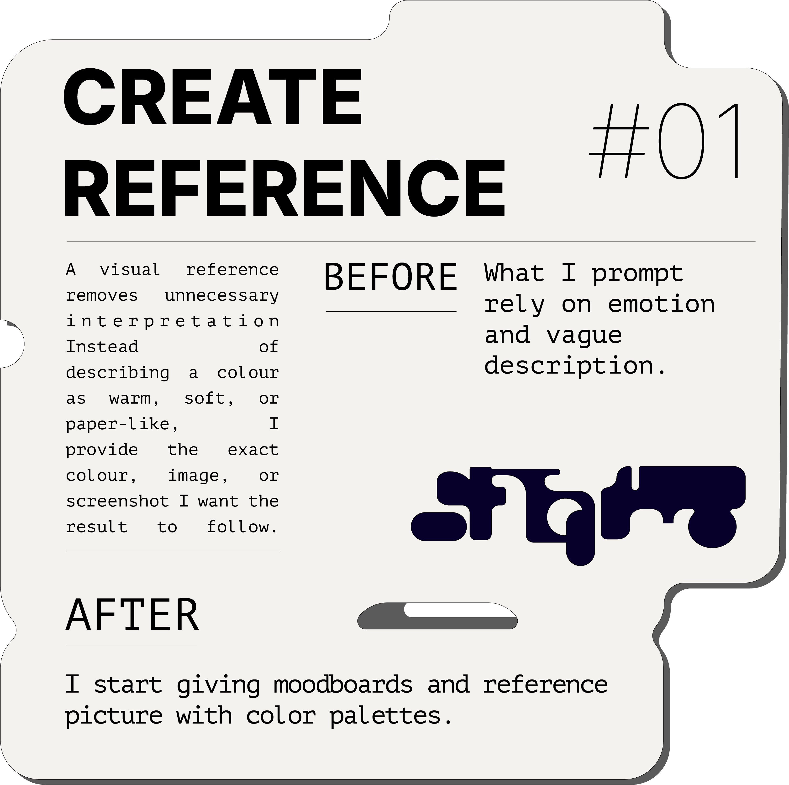
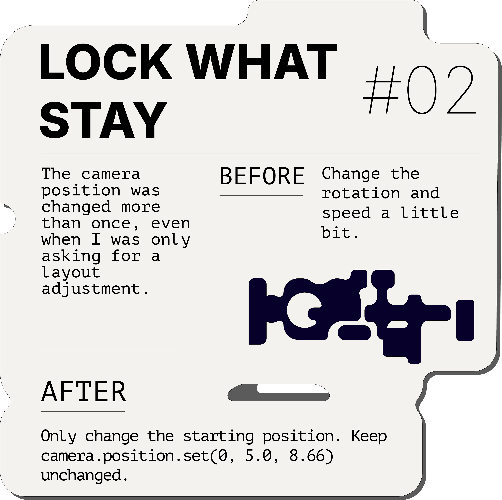
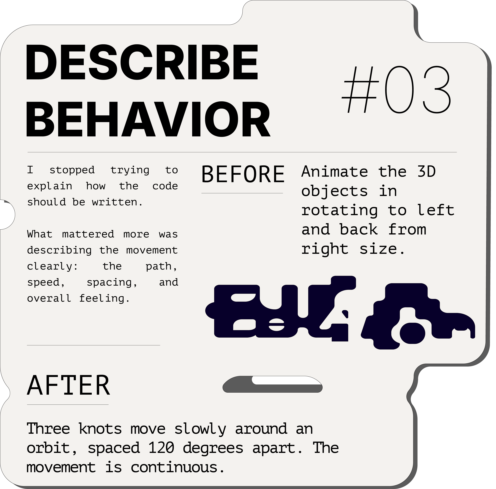
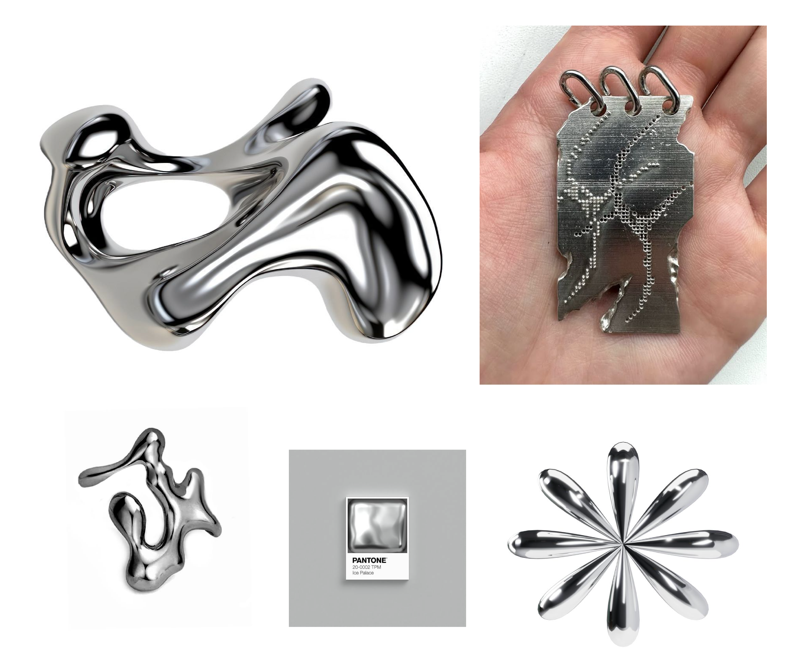
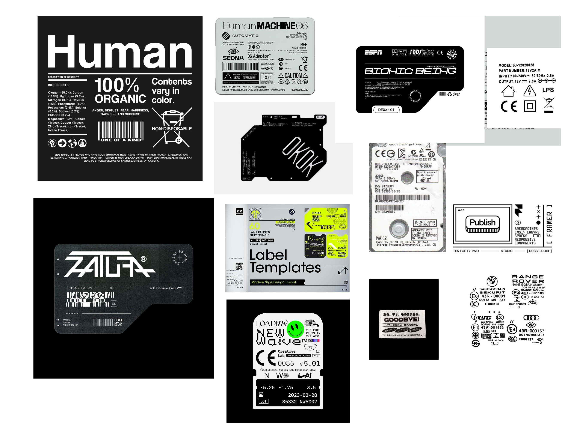

DIRECTING TO AI THROUGH DESIGN
An AI-assisted workflow for building interactive design systems
00 — Overview
AI Workflow
01 — Problem
Define Problem
I built this because I kept running into the same problem. The tools exist, but using them well is harder than it looks. Most people interact with AI through a chat box. I wanted to find out what happens when you push it further: use it as a production partner, not a search engine.
But the real question I was trying to answer was: how do you give an AI taste? How do you build a shared aesthetic, label it, describe it precisely enough, so that what comes out actually matches what you had in mind? This site is the experiment. Every piece of it was built without writing a line of code by hand. What I was figuring out the whole time was the language. The exact way to describe a visual feeling so the AI can replicate it perfectly. That is what this project documents.
02 — My Workflow
How I Work
DIRECTION Assembled two moodboards to lock in the visual direction early. One focused on material and form, the other on typography and graphic system. Both fed into the final visual language.
INTERACTION Multiple approaches to the 3D scene and card interactions were tested in parallel. Speed mattered more than quality at this stage.
REVERTED Two versions of the camera movement were tested. Both felt wrong once seen in the browser. The original position was locked. A fix for the hero headline created a worse problem than the original bug. Both fixes were reverted.
MOTION Scroll speeds, easing curves, and transition timings were dialed in last. Each value was adjusted until the movement felt intentional at full scroll speed.
03 — AI Limitations
When It Breaks
04 — What I Found
I Found

Describe

Boundary First

Explanations
05 — Fails
Broke
06 — Design
At first, I considered exploring the project through industrial design and physical product development. As the idea evolved, however, I realized that I was more interested in how a concept could be communicated through 3D, motion, and interactive web experiences.
I therefore developed the project as an experimental, AI-assisted website. This direction gave me an opportunity to explore how 3D motion, scroll interaction, and cinematic language could be translated into a digital experience.
Before building the website, I studied a range of 3D and motion-focused websites and created several moodboards to analyze their camera movement, materials, typography, composition, and pacing. This research helped me establish the project's visual direction and explore how AI could support the process from concept development and prototyping to implementation.




07 — Tools
08 — Reflection
This project changed how I think about designing with AI.
At the beginning, I assumed that if I could describe the experience clearly enough, AI would be able to generate something close to what I imagined. In practice, I quickly learned that AI could build and revise quickly, but it could not replace the design decisions that needed to happen before implementation.
AI was useful for testing layouts, motion ideas, and interaction behaviors. However, it often produced results that technically worked but did not feel visually or experientially right. It could follow an instruction, but it could not always understand the larger design intention, recognize when the visual hierarchy felt unbalanced, or determine whether a motion felt appropriate for the experience.
This became especially clear while designing the game interface. The quality of the final result depended heavily on the materials I prepared myself. The card designs, visual system, interaction states, icons, content structure, and supporting assets could not simply be invented through repeated prompting. I needed to design these elements intentionally and provide a clearer foundation before AI could help bring them into the website.
I also learned that a storyboard or interaction flow is necessary before building complex motion. Without a clear sequence of what appears, what moves, what responds to the user, and what remains fixed, the implementation can easily become disconnected or visually inconsistent. AI can execute individual requests, but it does not automatically understand the full experience unless that logic has already been defined.
My role was therefore not only to give instructions. I had to art direct the process: establish the visual direction, create the key assets, define the interaction logic, review each result, identify what was missing, and decide what should remain unchanged.
This project showed me that AI works best as a production and experimentation partner, not as a substitute for design thinking. It can accelerate implementation, generate alternatives, and help test ideas, but the quality of the outcome still depends on having a strong concept, clear visual assets, a structured storyboard, and consistent human judgment.
The most important skill was not writing every line of code myself. It was knowing what experience I wanted to create, preparing the right design foundation, recognizing when the result was not there yet, and continuing to shape it until the final product felt intentional.